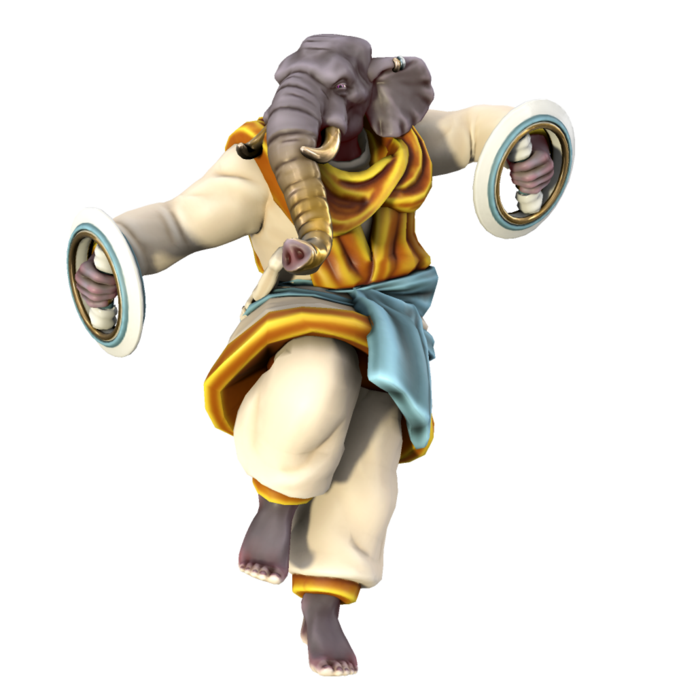
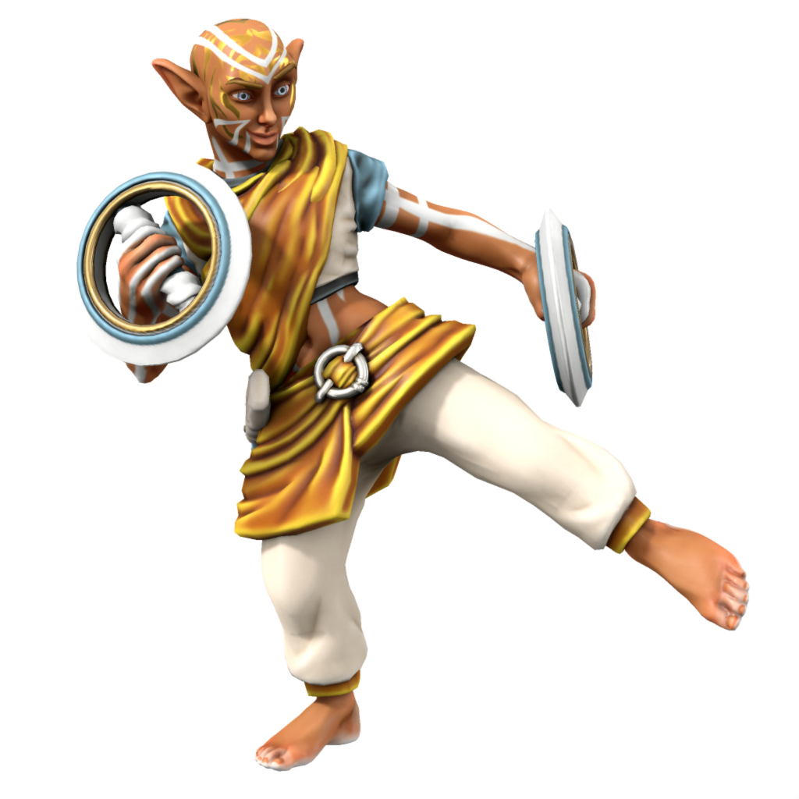
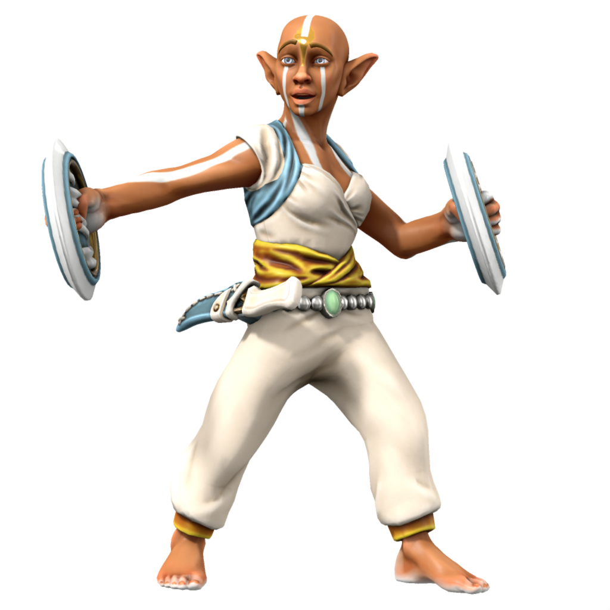

Sikari
The state religion of Kashar, Sikari, is deeply rooted in the local history of the region. Followers revere the Eternal Flame, a magical fire housed in Durga-Agun atop a vast tower, burning in a vast metal dish full of oil. The flame has been burning since the founding of Kashar by the first Sultan and represents the strength and stability of the Kash dynasty. The fire is near impossible to extinguish, once lit any fuel will burn to ashes regardless of any attempt to put the fire out.
Ranks
Brahman

The leader of the faith, advises the Sultan on spiritual matters and administers the Sikari faith.
Herbad

Herbadi are keepers of the flame, who generally perform the day to day maintenance such as adding oil and tower maintenance.
Statblock
Herbad
Armour Class 16
Hit Points 38 (6d8 + 11)
Speed 45ft.
Ki 5, save 13
Proficiency Bonus +3
| STR | CON | DEX | INT | WIS | CHR |
|---|---|---|---|---|---|
| +0 | +1 | +3 | +0 | +3 | +0 |
| 11 | 13 | 16 | 11 | 16 | 11 |
Martial Arts After an attack using no weapon or a monk weapon, the Herbad can perform an unarmed attack as a bonus action.
- [ ] Wholeness of Body As an action, restore 15hp.
Unarmed Strike Melee Attack +6 to hit, range 5ft., one target. Hit: 1d4 bludgeoning damage.
Chakram Hoop Melee (Monk) Weapon Attack +6 to hit, range 5ft., one target. Hit: 1d6 bludgeoning + 1d4 slashing damage.
χ Flurry of Blows Immediately after an action, make two unarmed strikes as a bonus action. On hit, either:
- Target must succeed on a Dexterity saving throw or be knocked prone.
- Target must make a Strength saving throw or be pushed up to 15 feet away.
- Target can't take reactions until the end of the Herbad's next turn.
χ Patient Defense Take the Dodge action as a bonus action on your turn.
χ Step of the Wind Take the Disengage or Dash action as a bonus action on your turn, and your jump distance is doubled for the turn.
Spellcasting
Spellslots None
Spell Save DC 13
Mobad

Mobadi are trainee keepers of the flame, learning the ancient rituals from Herbadi.
Statblock (5e)
Mobad
Armour Class 12
Hit Points 25 (3d8 + 11)
Speed 30ft.
Ki 3, save 15
Proficiency Bonus +2
| STR | CON | DEX | INT | WIS | CHR |
|---|---|---|---|---|---|
| +0 | +0 | +2 | +0 | +2 | +0 |
| 10 | 10 | 14 | 11 | 14 | 11 |
Martial Arts After an attack using no weapon or a monk weapon, the Mobad can perform an unarmed attack as a bonus action.
- [ ] Wholeness of Body As an action, restore 6hp.
Unarmed Strike Melee Attack +4 to hit, range 5ft., one target. Hit: 1d4 bludgeoning.
Chakram Hoop Melee (Monk) Weapon Attack +4 to hit, range 5ft., one target. Hit: 1d6 bludgeoning + 1d4 slashing.
χ Flurry of Blows Immediately after an action, make two unarmed strikes as a bonus action. On hit, either:
- Target must succeed on a Dexterity saving throw or be knocked prone.
- Target must make a Strength saving throw or be pushed up to 15 feet away.
- Target can't take reactions until the end of the Herbad's next turn.
χ Patient Defense Take the Dodge action as a bonus action on your turn.
χ Step of the Wind Take the Disengage or Dash action as a bonus action on your turn, and your jump distance is doubled for the turn.
Tetubad
Sometimes called "wild herbadi" or "flame seekers", these monks reject the monastic lifestyle and choose to live in the ruins of Nasruk or in the wilds of the Parbati and Satru mountain ranges. Their mission is to seek out amundi and return them to Dhurga Agun to be unified with the eternal flame.
The most well known tetubad was Sultan Kash Viratu who, after being ousted from power by his younger brother Ripu, roamed the Satru mountains seeking amundi for 14 years, returning with several and using the power granted by them to retake the throne before uniting them with the eternal flame. Some subsequent Sultans choose to relinquish power to a regent the first 14 years of their rule to spend time as a tetubad before ascending to the sultanate.
Statblock (5e)
All tetubadi above CR1 have the following ability:
Wild Monk The tetubad can expend ki to upcast a fey summon.
Theological debate
Sikarists disagree on the origin of the Eternal Flame. The official position of the Sultanate is that it was lit by the first Sultan, who was an accomplished sorceror. Many however, especially in Jami'Marub, believe it is the last remnant of the flame which destroyed Nasruk. This disagreement is tolerated, but is a source of some political tension between the state and religious capitals.
🡐 Religions